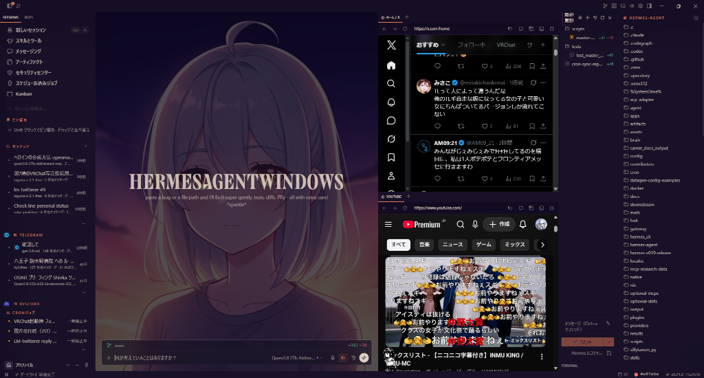
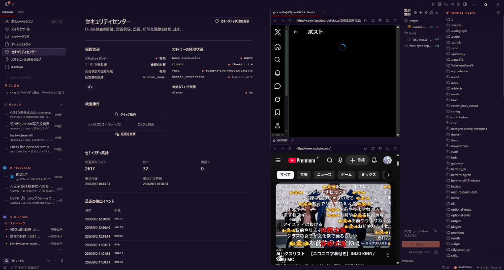

Traditional IDEs place the human at the centre of a manual loop. For an autonomous agent that operates 24/7, the entire OS environment—Git operations, web research, local LLM inference, cognitive memory, and ClamAV/YARA security—must be consolidated into a unified workstation.
Optimised solely for human fingers typing into a text buffer.
Coding is merely one step. The agent must research, reason, audit, automate, and recover autonomously.

The Hermes Agent Home Desktop: Unified chat core flanked by live social/web research panes, session switcher, and real-time Git repository workspace.

The Built-in Security Centre: Active file integrity monitoring, ClamAV/YARA scan engine, and automated quarantine to safeguard autonomous execution.
A first-class Git repository tree is permanently docked on the right. Both human and agent execute commits, review branch diffs, operate worktrees, and supervise workspace health concurrently—eliminating window-hopping fatigue.
Rather than relying on disjointed external applications, Chromium is deeply integrated into the desktop canvas. The agent's autonomous navigation synchronises seamlessly with human visual oversight.
Giving an agent unrestricted local disk writing, shell invocation, and external MCP tools demands real-time threat telemetry. A built-in security console scans files, inspects malware hashes, and isolates suspicious artefacts.
Prevents memory leaks and silent process deaths. Implements a strict 'Single Authority for Restarts' via an external Go daemon, avoiding cascading supervisor failures and guaranteeing genuine 365-day uptime.
Dumping endless raw chat logs into model prompts degrades reasoning. Hermes implements true cognitive long-term memory: hybrid vector search, semantic knowledge graphs, and mathematical forgetting-curve decay.
Not merely a terminal output: integrates VOICEVOX local TTS, OSC control protocols, and virtual avatar pipelines for AITuber operations and physical presence in 3D worlds.
Demoware can afford to disregard security. But when you entrust an agent with raw shell privileges, file-system write authority, and autonomous network tools for 24 hours a day, observability and quarantine become non-negotiable.
| Protection Layer | Technology & Engines |
|---|---|
| Malware & Exploit Detection | ClamAV 1.5.4 / YARA Rules / Windows Defender |
| File Integrity & Reputation | Cryptographic Hash Reputation & Heuristics |
| Isolation & Defusal | Automated Quarantine Manager & Process Bounds |
| Audit & Forensic Trail | Continuous Tool Execution & Terminal History Logs |
A blind 'git merge upstream/main' destroys downstream Windows optimisations in seconds. We operate a disciplined Semantic Integration Pipeline that categorises every upstream commit:
Directly accepted upstream enhancements.
Re-engineered to align with Windows permissions, ConPTY bridge, and multi-threaded architecture.
Held back where upstream patterns break cross-platform safety.
Preserved custom Windows supervisor and security layers.
Prior to any formal release binary or public installer, repository telemetry revealed an extraordinary phenomenon:
Developers globally were quietly downloading and running the raw code, yet we had failed to communicate our vision to the broader world. This workstation is our manifesto for the future of developer operating environments.
Licensed under the permissive MIT Open Source License. Explore the code, file an issue, submit a pull request, or bestow a star on GitHub.